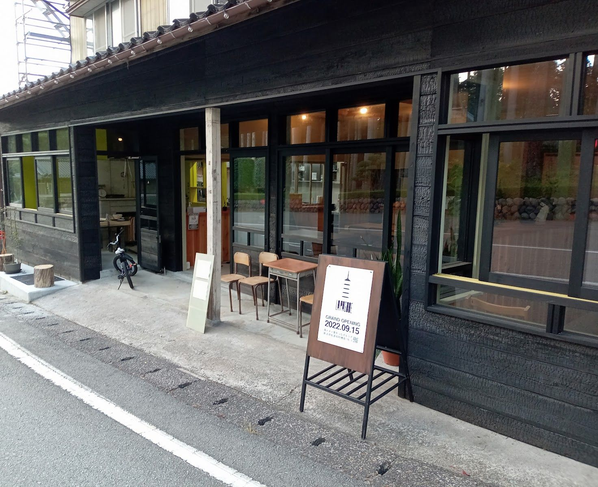
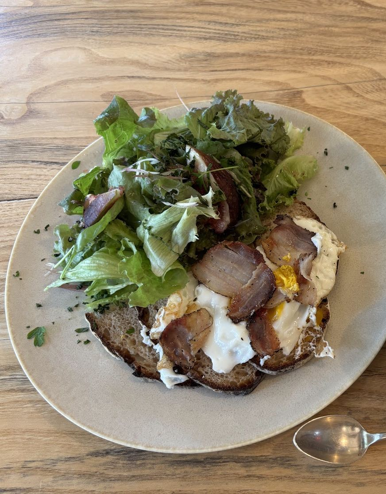
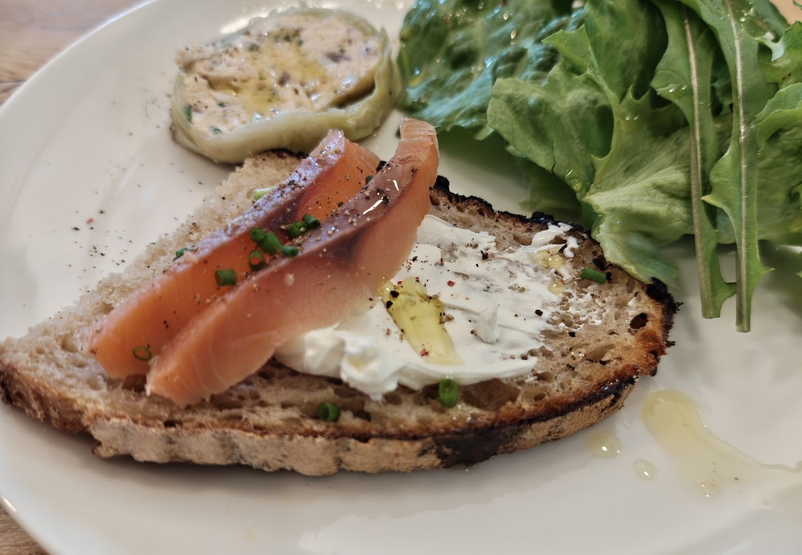

壱 森
木は、森にあった
「森から薪を切り出し」。お店が自分たちのことを語るとき、いちばん初めに置いた言葉は、森でした。
料理の話より先に、木の話から始まる。この店を知る入口として、それはとても素直なことのように思います。
掲載記事では、この場所は「森と火と食をつなげるラボ」と紹介されています。カフェ・ビストロ・ガストロノミーレストランとして機能する柔軟な場であり、佐渡の食材の新しい可能性を探る「食のラボ」でもあるそうです。掲載記事(2025年1月)より
森で採れるきのこ(タマゴタケ、ジロール茸、セップ茸など)を積極的に使うこと。薪の保管・乾燥の作業場には、樹齢50年以上のナラの木を保有していること。どちらも記事で触れられています。掲載記事(2025年1月)より
森や薪のことを、もっと知りたい方へ。お席で、お店の方にそっとお尋ねください。
弐 火
火のまわりに、人が集まる
「薪から火を焚き」。お店の言葉は、次に火を語ります。
お店にはフランス製の薪窯が導入されていて、薪の種類によって火力と香りが変わる、と紹介されています。掲載記事(2025年1月)より
火のあるところには、自然と人が集まります。LA PAGODE を営むのは、フランス人のオーナーシェフと、日本人の奥様です。
火を囲む、二人のこと
ジル・スタッサール氏
フランス・ブルゴーニュ地方ヴェズレー村のご出身。フランス・中国などで、レストランのプロデュースに携わってこられました。シェフ、作家、編集者、写真家、現代美術アーティストとして活動されています。掲載記事(2025年1月)より
今井朋氏
群馬県のご出身。佐渡へ移る前は、群馬の「アーツ前橋」で学芸員を務めていました。掲載記事(2025年1月)より
2020年夏のお盆に家族旅行で佐渡を訪れたことが転機となり、2022年4月から、佐渡での暮らしを本格的に始められました。掲載記事(2025年1月)より
お迎えしてくれる夫婦について、こんな声が寄せられています。
ご夫婦のオーナーさんとスタッフの方と楽しくお話しさせていただき、とても温かく迎えていただきました。
そして、店内のこと。
店内の雰囲気はヨーロッパ風で、暖かみがあり、居心地が良かったです。
参 鶏
卵は、飼っている鶏から
「鶏を飼い」。お店の言葉の三つ目は、暮らしの匂いがします。
お店の裏庭では、平飼いの鶏を育てているそうです。掲載記事(2025年1月)より
LA PAGODE では、自家飼育の鶏の卵を使っています。ご来店の方の口コミにも、その卵で作るオムレツのことが語られています。
記事で紹介された料理の例には、平飼い卵を使った洋風茶碗蒸し(森のきのこ入り)や、平飼い卵の卵白を使った期間限定のマカロンがあります。2025年1月時点の例で、季節の食材によって変わります。掲載記事(2025年1月)より

肆 手
粉と卵と、手のひらの仕事
「手仕事を尊重し」。四つ目の言葉は、手でつくることへの敬意です。
口コミには、こんな手仕事が綴られています。地元産のイカ墨と地卵を練り込んだという手作りのパスタ。自家製の卵を使った手打ちのパスタ。自家製のハーブを使った、オリジナルのドリンク。
ピザやクロワッサンも、口コミに登場します。口コミにはテイクアウトしたという声もあります。


伍 海
海のものも、お皿の上に
森や卵のことばかりではありません。海の食材も、お皿に並びます。
口コミにあらわれる、海の食材
- イクラ
- ズワイ蟹
- ムール貝
- カレイ
- タコ
イクラとズワイ蟹、ムール貝はパスタに。カレイはムニエルに。タコはスープに。ご来店の方の口コミには、素材の味が活きているという感想も届いています。
産地については、ムール貝は佐渡の海で捕れたもの、タコは佐渡産のものと、口コミに書かれています。食材は佐渡産のものにこだわっている、という話も綴られています。
記事では、食材は市場を通さず、生産者から直接仕入れていると紹介されています。漁師が朝に獲った魚、農家が畑で採った野菜、山菜、果物、ジビエなど、季節の食材が並び、「半径5〜10km圏内で全ての食材との出会いが生まれる」とのことです。掲載記事(2025年1月)より
陸 卓
卓に並ぶもの
ここに並べたのは、出どころの違う三つの一覧です。ご来店の方の口コミで語られている料理と、掲載記事(2025年1月)で紹介された料理の例、そして2025年夏のドリンクメニューです。
口コミの料理の価格は、その口コミでの参考価格です。

記事で紹介された料理の例(2025年1月時点)
季節の食材によって変わります。以下は、2025年1月時点の記事に名前が出た料理です。掲載記事(2025年1月)より
- 佐渡産ワタリガニのニョッキ
- 森のきのこを使った平飼い卵の洋風茶碗蒸し
- 石鯛のカルパッチョ(おけさ柿添え)
- 佐渡牛のロースト(ナツハゼソース)
- 佐渡産りんごのタルトタタン
- マカロン(期間限定。平飼い卵の卵白、佐渡産ゆず使用)
ドリンク(2025年夏のメニューより)

コーヒー
- カフェ ロング450円
- カフェ エスプレッソ450円
- ダブル エスプレッソ600円
- カフェ ラテ(はちみつプラス +50円)500円
- アイスコーヒー500円
- アイスラテ550円
- スパークリングコーヒー600円
ティー
- 紅茶(アールグレイ)700円
- ルイボスティー(ノンカフェイン)700円
- ハイビスカスティー(ホット・アイス、ノンカフェイン)650円
その他
- 100%オレンジジュース500円
- 100%グレープフルーツジュース(ピンク)500円
- ウーロン茶500円
環境への配慮のため、ストローはお付けしていません。必要な方はお申し出ください。
漆 席
妙宣寺の向かいで、お待ちしています
佐渡市阿佛坊、妙宣寺の向かいです。近くにお越しの際は、お立ち寄りください。
妙宣寺五重塔の目の前に、2022年にオープンしました。佐渡汽船 両津港から車で約30分です。掲載記事(2025年1月)より
お料理について、こんな声があります。
魚も、スープも、「素材の味を活かしました」という内なる声が伝わってくる。
- お店
- LA PAGODE（ラ パゴッド）
- 住所
- 〒952-0303 新潟県佐渡市阿佛坊18-1（妙宣寺の向かい）
- 電話
- 090-9246-7264
- @la_pagode_2022
- 営業日・営業時間
-
9:00〜21:00（冬期12〜3月は10:30〜21:00）
定休日は火曜・水曜
毎週月曜の17:00〜21:00は要事前予約
掲載記事(2025年1月)より。最新の営業日はInstagramの営業カレンダーでご確認ください
- アクセス
- 佐渡汽船 両津港から車で約30分掲載記事(2025年1月)より
- お支払い
- PayPay対応
お席につくまで
- 一
Instagramで確かめる
お店のInstagramの営業カレンダーで、営業している日をご確認ください。
- 二
お電話でご予約
090-9246-7264 へ。お電話で、ご希望のお席をお伝えください。
- 三
妙宣寺の向かいへ
目印は妙宣寺です。その向かいに、お店があります。